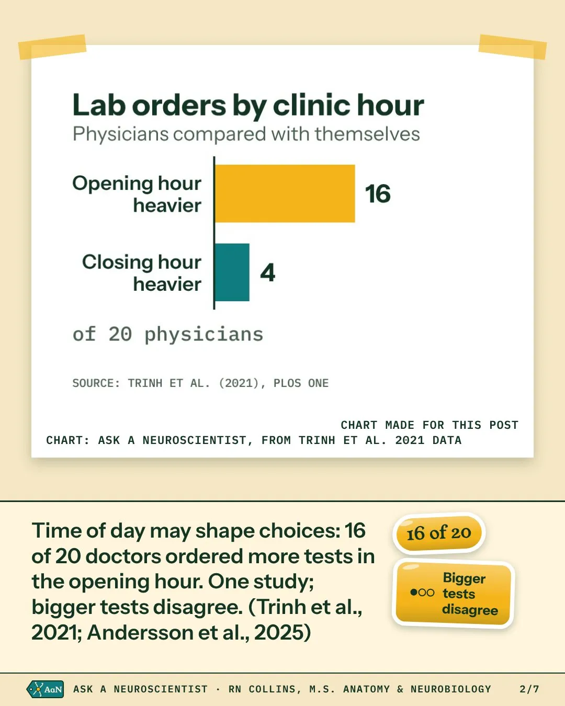
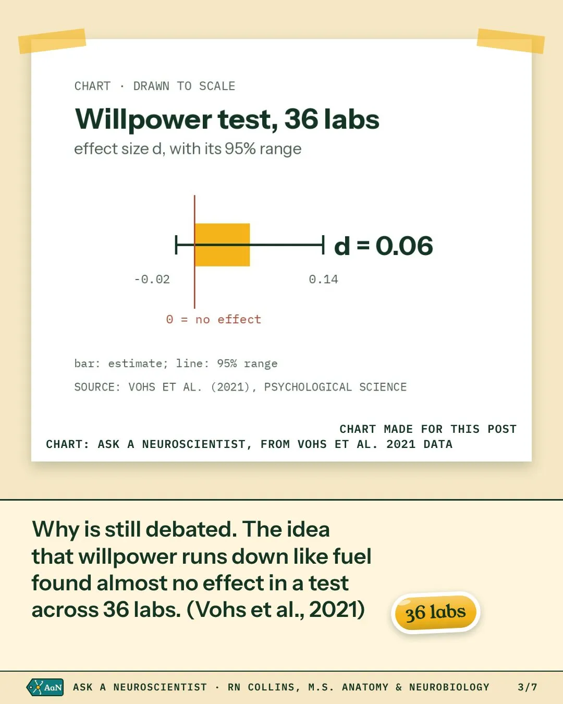
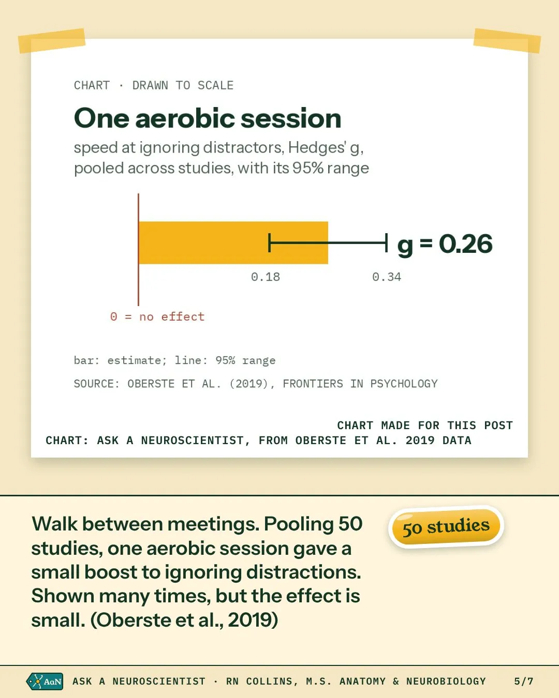
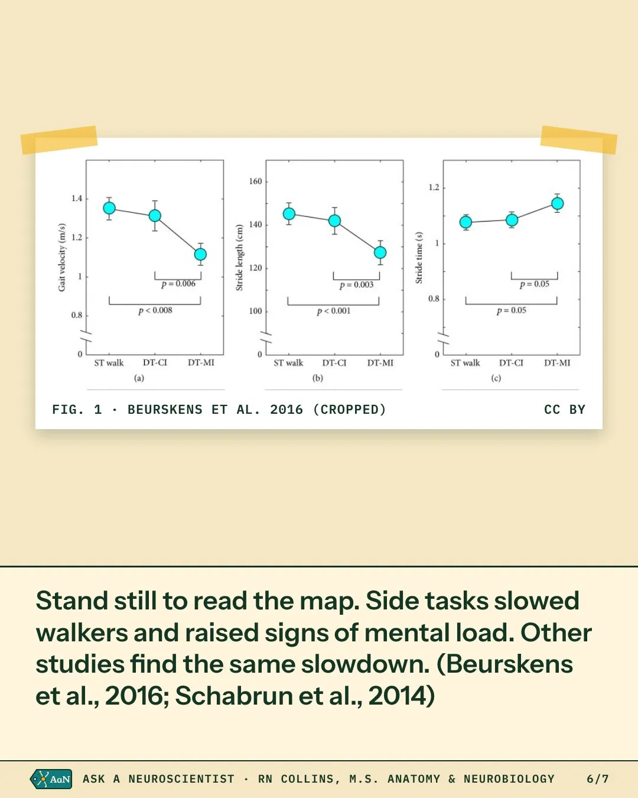

Your first big trade show: a brain plan for the day, built from studies, saying for each finding how sure the science is.
Your first big trade show: a brain plan for the day, built from studies
Plan around your attention as well as the floor map. This show runs four days in Las Vegas, with three days on the expo floor.
Plan around your attention as well as the floor map.
Time of day may shape choices: 16 of 20 doctors ordered more tests in the opening hour. One study; bigger tests disagree. (Trinh et al., 2021; Andersson et al., 2025)
Time of day may shape choices.
Why is still debated. The idea that willpower runs down like fuel found almost no effect in a test across 36 labs. (Vohs et al., 2021)
Why is still debated.
Coffee: in 23 young men, a typical amount showed no sleep effect; a high amount within 12 hours of bed disrupted sleep, perhaps unnoticed. One study. (Gardiner et al., 2025)
Coffee: in 23 young men, a typical amount showed no sleep effect; a high amount within 12 hours of bed disrupted sleep, perhaps unnoticed.
Walk between meetings. Pooling 50 studies, one aerobic session gave a small boost to ignoring distractions. Shown many times, but the effect is small. (Oberste et al., 2019)
Walk between meetings. Pooling 50 studies, one aerobic session gave a small boost to ignoring distractions.
Stand still to read the map. Side tasks slowed walkers and raised signs of mental load. Other studies find the same slowdown. (Beurskens et al., 2016; Schabrun et al., 2014)
Stand still to read the map.
The plan: big choices early, walk between meetings, stop to read, refill, and keep coffee early. No study tested this at a show, so notice your own focus.
No study tested this at a show, so notice your own focus.
Sources
rn-selected-work.vercel.app/sources/mjbex14
Education, not medical advice.
#AskANeuro